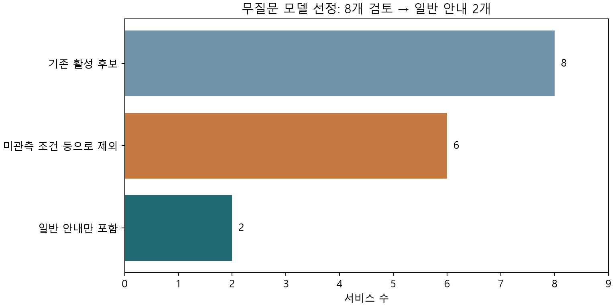
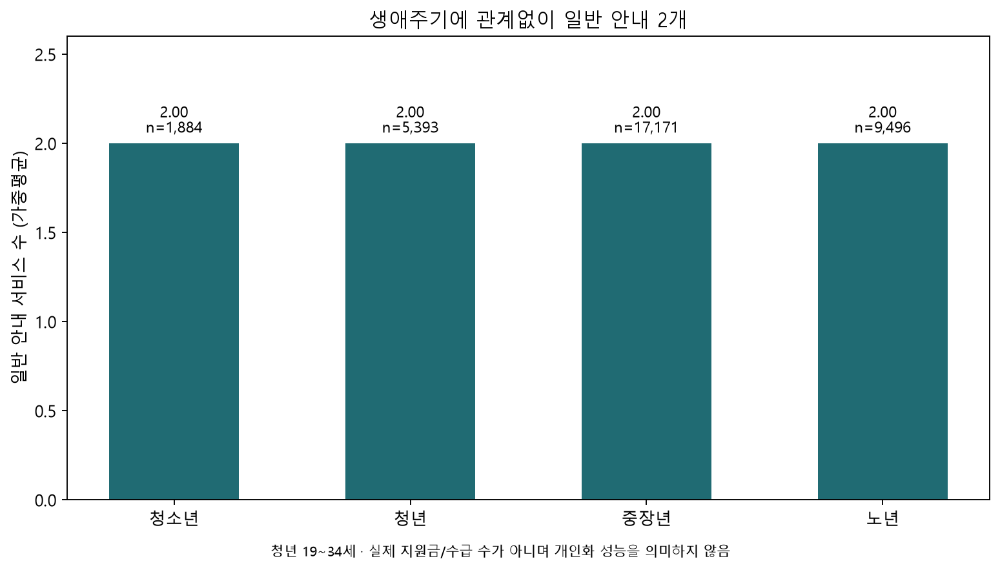

모델 B · 추가 질문 없는 분석
질문하거나 개인 특성을 추정하지 않고, 현재 보유한 사회조사와 정책 원문만 사용했습니다. 기존 분석과 별도로 실행되는 보수적인 일반 안내 규칙 모델입니다.
실제 지원·선정 여부를 검증한 예측모델은 현재 자료로 만들지 못했습니다. 아래 2개는 별도 요건 없는 일반 정보·상담 안내이며, 수급 가능한 지원금 2개를 뜻하지 않습니다. 정확도나 실제 자격을 확인했다는 주장도 하지 않습니다.
1. 왜 더 엄격하게 선정했나
연령·학력·복지카드가 관측되어도 상담 필요성, 디지털 어려움, 개별 프로그램 대상 여부까지 알 수 있는 것은 아닙니다. 미관측 조건을 충족했다고 가정하지 않고, 이 조건이 남는 서비스는 전체 표본용 모델에서 제외했습니다. 원문에 별도 지원요건이 없다고 적힌 일반 안내만 남겼습니다.
이전 제외 목록을 유지한 8개 후보를 다시 검토한 결과입니다. 461개를 이번에 새로 전수 재감사한 결과나 활용 가능한 정책의 이론적 최대치가 아닙니다. 특정 집단으로 범위를 제한하면 기본 안내 후보는 달라질 수 있습니다.

2. 새 모델이 출력하는 것
각 응답자에게 선정된 서비스의 일반 안내 포함=1을 출력합니다. 두 서비스 모두 별도 요건이 없는 안내여서 전원 동일하게 2개가 나옵니다. 모델 밖 정책은 부적격=0으로 출력하지 않습니다. 실제 선정·지급 여부는 출력하지 않습니다.
| 서비스명 | 판정근거 | 일반안내_표본수 | 일반안내_가중비율 | 실제선정여부 |
|---|---|---|---|---|
| 가족전용상담전화 | 별도 선정기준 없음 | 33944 | 100.00 | 미관측; 예측하지 않음 |
| 마을변호사 | 지원요건 없음 | 33944 | 100.00 | 미관측; 예측하지 않음 |
가족상담의 심화 서비스·기관 연계, 마을변호사의 현장방문 가능 여부까지 포함하는 판정은 아닙니다. 이용 희망이나 필요를 관측했다고 간주하지 않으며 일반 안내 목록만 제공합니다.
3. 생애주기별 결과
가중평균 2.00개, 개인별 안내 수의 분산 0입니다. 보편적인 안내만 남겨 나타난 결과이며 높은 예측 성능이나 맞춤 추천을 의미하지 않습니다. 청년은 만19~34세입니다.
| 생애주기 | 표본수 | 가중인구비율 | 일반안내_가중평균 | 일반안내_최소 | 일반안내_최대 |
|---|---|---|---|---|---|
| 청소년 | 1884 | 5.98 | 2.00 | 2 | 2 |
| 청년 | 5393 | 21.46 | 2.00 | 2 | 2 |
| 중장년 | 17171 | 51.02 | 2.00 | 2 | 2 |
| 노년 | 9496 | 21.54 | 2.00 | 2 | 2 |

4. 후보 8개의 포함·제외 근거
정책별 검토설명과 보관 원문의 지원대상·선정기준을 함께 제공합니다. 제외는 이 사람에게 지원 불가라는 의미가 아닙니다.
| 서비스명 | 모델B_선정 | 판정근거 | 검토설명 |
|---|---|---|---|
| 가족전용상담전화 | 포함 | 별도 선정기준 없음 | 일반가족을 포함하고 별도 선정기준이 없으므로 일반 정보·초기상담 안내만 포함한다. 심화상담/연계서비스 선정은 판정하지 않는다. |
| 무료법률상담 | 제외 | 법률상담 필요성 미관측 | 국적은 관측되지만 법률 상담이 필요한 상태는 미관측이다. 모든 국민이 상담을 필요로 한다고 가정하지 않는다. |
| 마을변호사 | 포함 | 지원요건 없음 | 원문이 모든 주민에 대해 별도 지원요건이 없다고 명시한다. 일반 원격상담 안내만 포함하며 현장방문 가능 여부는 판정하지 않는다. |
| 청소년성문화센터설치운영 | 제외 | 대상별 프로그램 범위 미확정 | 아동청소년·교사·양육자 등이라는 대상과 개별 교육 프로그램의 범위가 동일하지 않다. 일반 국민 문구만으로 모든 프로그램 자격을 확정하지 않는다. |
| 노후준비서비스 | 제외 | 전체 표본에 대한 범위 미확정 | 대한민국 국적 응답자에게는 기본 안내가 가능하나 원문에 외국 국적자의 이용 여부가 명시되지 않았다. 외국 국적 556명을 자동 탈락/제거하지 않고 정책을 전체 표본용 모델에서 제외한다. |
| 디지털배움터 | 제외 | 디지털 어려움 미관측 | 원문은 AI·디지털에 어려움을 겪는 국민을 대상으로 한다. 연령이나 학력으로 해당 어려움을 추정하지 않는다. |
| 장애인 집합 정보화교육 | 제외 | 교육 필요성·등록 상태 미확정 | 정보화교육 필요성이 미관측이다. 복지카드 미소유는 미등록/비장애를 의미하지 않으므로 소유 변수만으로 전체 사람의 여부를 완결하지 않는다. |
| WEE 클래스 상담지원 | 제외 | 상담·교육활동 필요성 미관측 | 초중고 재학은 일부 확인되지만 선정기준의 상담·교육활동 필요성을 관측하지 않았다. 일반학생이라는 표현으로 선정기준을 생략하지 않는다. |
검토에 사용한 정책 원문 보기
| 서비스명 | 지원대상_보관원문 | 선정기준_보관원문 | 원문기준연도 |
|---|---|---|---|
| 가족전용상담전화 | 미혼모,부, 한부모, 이주여성, 다문화가족, 일반가족 등을 지원합니다. | 별도 선정기준 없음 | 2026.00 |
| 무료법률상담 | 법률 상담이 필요한 국민을 대상으로 지원합니다. | 지원대상의 내용을 참고해주시기 바랍니다. | 2026.00 |
| 마을변호사 | 별도의 지원대상, 지원요건은 없으며, 모든 주민들이 마을변호사 제도의 혜택을 받을 수 있습니다. | 지원대상의 내용을 참고해주시기 바랍니다. | 2026.00 |
| 청소년성문화센터설치운영 | 아동청소년(유치원, 초·중·고등학생) 및 교사, 양육자 등 일반 국민을 지원합니다. | 지원대상의 내용을 참고해주시기 바랍니다. | 2026.00 |
| 노후준비서비스 | 일반 국민 모두가 서비스를 이용할 수 있습니다. | 지원대상을 참고해주시기 바랍니다. | |
| 디지털배움터 | AI, 디지털에 어려움을 겪는 국민을 대상으로 합니다. | 지원대상의 내용을 참고해주시기 바랍니다. | |
| 장애인 집합 정보화교육 | 정보화교육이 필요한 장애인을 대상으로 합니다. | 지원대상의 내용을 참고해주시기 바랍니다. | |
| WEE 클래스 상담지원 | 초중고 학교 재학생 중 학교 부적응 학생 및 위기학생, 일반학생을 지원합니다. | 초중고 학교 재학생 중 상담 및 교육활동이 필요한 학생을 지원합니다. ⏎ 학교폭력 피·가해, 대인관계 어려움, 미디어 중독, 학업 스트레스 등 | 2026.00 |
5. 기존 분석과의 차이
| 항목 | 모델A_기존분석 | 모델B_무질문분석 |
|---|---|---|
| 분석 대상 정책수 | 8 | 2 (일반 안내 한정) |
| 선정 원칙 | 이용 희망 등을 전제한 기본대상 안내 | 전 표본에서 추가 정보가 필요하지 않은 일반 안내만 |
| 기존 제외 정책 453개 | 제외 유지 | 제외 유지 |
| 개인별 미확인 | 별도 표시 | 미확인이 남는 정책 자체를 모델 범위에서 제외 |
| 평균의 의미 | 기본대상 부합 수 6.02 | 일반 안내 수 2.00; 측정 범위가 달라 성능 비교 불가 |
| 실제 지원 여부 정답 | 없음 | 없음 |
| 학습/정확도 | 학습하지 않음 | 상수 규칙; 학습 및 정확도 보고하지 않음 |
기존 평균6.02개와 새 평균2.00개는 서로 다른 범위를 측정합니다. 성능이 하락하거나 향상했다고 비교할 수 없습니다. 기존 보고서는 이용 희망 등을 전제한 기본대상 분석으로 유지합니다.
6. 데이터·모델·평가 방법
- 사람 데이터: 사회조사2025, 33,944행·337열. 가구번호와 가구원번호 조합으로 중복을 확인했습니다.
- 정책 데이터: 보관 원문461개 및 기존 제외 목록. 새로운 설문, 외부 개인자료, 확산모델 합성자료는 사용하지 않았습니다. 가계동향조사를 같은 사람 자료처럼 연결하지 않았습니다.
- 실제 판정용 개인 특성은0개입니다. 만연령은 그룹 구분, 가구원가중값은 집계에만 사용합니다.
- 가중평균=Σ(개인 가중치×일반 안내 수)/Σ(개인 가중치). 외국 국적556명도 표본에 유지했습니다. 전표본 또는 각 그룹을 분모로 사용합니다.
- 실제 신청·승인·지급 정답은 없습니다. 모델이 만든 결과를 정답으로 재학습하지 않았습니다.
- 출력이 상수이므로 학습·시험 분할, 정확도, AUC, 확산모델 성능은 산출하지 않았습니다. 일반 안내100%는 추천 정확도100%가 아닙니다.
- 2025년 관측과 보관된 정책 문구의 비교입니다. 정책 기준연도 누락·2026년 문구가 있어 현재의 개인 자격이나 최신 운영 상황을 보장하지 않습니다.
7. 이전 감사에서 제외된451개: 대표 사유
기존 감사 집계를 참고용으로 제공합니다. 정책당 대표 사유1개이며 한 정책의 모든 누락 조건을 세는 통계는 아닙니다. 여기에 기존19개 모델 정책의 추가 제외2개를 합쳐 이전 제외는453개입니다.
| 대표사유 | 정책수 |
|---|---|
| 가족·양육·이주 관계 | 17 |
| 고용·사업·경력 세부요건 | 46 |
| 공모·심사·원문 보강 | 10 |
| 구직·창업·교육 수요 | 2 |
| 기관·사업주·기업 단위 | 21 |
| 법정 수급·차상위·연금 자격 | 58 |
| 보험·가입·기존 이용 이력 | 7 |
| 보훈·병역·탈북·특수 신분 | 63 |
| 세부지역·실거주·지역기준 | 5 |
| 시설 보호·입양·퇴소 이력 | 13 |
| 위기·피해·돌봄 필요 | 36 |
| 임신·출산·13세 미만 자녀 | 30 |
| 장애 세부유형·정도·평가 | 29 |
| 주택·설비·상품·실제 이용 | 9 |
| 질환·검사·치료·요양 | 36 |
| 학교·학적·성적·자격 | 18 |
| 행정소득·재산·금융 정보 | 51 |
다운로드·재현
검토표·집계표 Excel · 정책별 검토 CSV · 규칙 모델 JSON · 재현 방법 · 분석 코드
개인별 판정 행과 원자료는 로컬에만 저장했습니다. 공개 자료는 정책 정보·집계·코드이며 개인기록을 포함하지 않습니다.